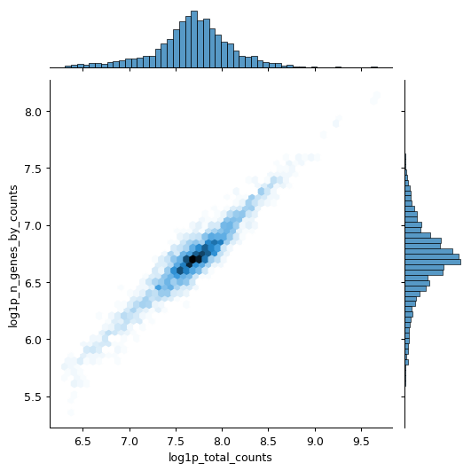
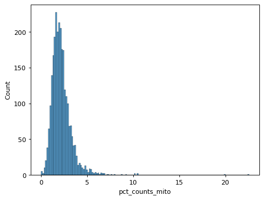

scanpy.pp.calculate_qc_metrics
- scanpy.pp.calculate_qc_metrics(adata, *, expr_type='counts', var_type='genes', qc_vars=(), percent_top=(50, 100, 200, 500), layer=None, use_raw=False, inplace=False, log1p=True, parallel=None)
Calculate quality control metrics.
Calculates a number of qc metrics for an AnnData object, see section
Returnsfor specifics. Largely based oncalculateQCMetricsfrom scater [McCarthy17]. Currently is most efficient on a sparse CSR or dense matrix.Note that this method can take a while to compile on the first call. That result is then cached to disk to be used later.
- Parameters
- adata :
AnnDataAnnData Annotated data matrix.
- expr_type :
strstr(default:'counts') Name of kind of values in X.
- var_type :
strstr(default:'genes') The kind of thing the variables are.
- qc_vars :
Collection[str]Collection[str] (default:()) Keys for boolean columns of
.varwhich identify variables you could want to control for (e.g. “ERCC” or “mito”).- percent_top :
Collection[int] |NoneOptional[Collection[int]] (default:(50, 100, 200, 500)) Which proportions of top genes to cover. If empty or
Nonedon’t calculate. Values are considered 1-indexed,percent_top=[50]finds cumulative proportion to the 50th most expressed gene.- layer :
str|NoneOptional[str] (default:None) If provided, use
adata.layers[layer]for expression values instead ofadata.X.- use_raw :
boolbool(default:False) If True, use
adata.raw.Xfor expression values instead ofadata.X.- inplace :
boolbool(default:False) Whether to place calculated metrics in
adata’s.obsand.var.- log1p :
boolbool(default:True) Set to
Falseto skip computinglog1ptransformed annotations.
- adata :
- Return type
Tuple[DataFrame,DataFrame] |NoneOptional[Tuple[DataFrame,DataFrame]]- Returns
Depending on
inplacereturns calculated metrics (asDataFrame) or updatesadata’sobsandvar.Observation level metrics include:
total_{var_type}_by_{expr_type}E.g. “total_genes_by_counts”. Number of genes with positive counts in a cell.
total_{expr_type}E.g. “total_counts”. Total number of counts for a cell.
pct_{expr_type}_in_top_{n}_{var_type}– forninpercent_topE.g. “pct_counts_in_top_50_genes”. Cumulative percentage of counts for 50 most expressed genes in a cell.
total_{expr_type}_{qc_var}– forqc_varinqc_varsE.g. “total_counts_mito”. Total number of counts for variabes in
qc_vars.pct_{expr_type}_{qc_var}– forqc_varinqc_varsE.g. “pct_counts_mito”. Proportion of total counts for a cell which are mitochondrial.
Variable level metrics include:
total_{expr_type}E.g. “total_counts”. Sum of counts for a gene.
n_genes_by_{expr_type}E.g. “n_genes_by_counts”. The number of genes with at least 1 count in a cell. Calculated for all cells.
mean_{expr_type}E.g. “mean_counts”. Mean expression over all cells.
n_cells_by_{expr_type}E.g. “n_cells_by_counts”. Number of cells this expression is measured in.
pct_dropout_by_{expr_type}E.g. “pct_dropout_by_counts”. Percentage of cells this feature does not appear in.
Example
Calculate qc metrics for visualization.
import scanpy as sc import seaborn as sns pbmc = sc.datasets.pbmc3k() pbmc.var["mito"] = pbmc.var_names.str.startswith("MT-") sc.pp.calculate_qc_metrics(pbmc, qc_vars=["mito"], inplace=True) sns.jointplot( data=pbmc.obs, x="log1p_total_counts", y="log1p_n_genes_by_counts", kind="hex", )
 sns.histplot(pbmc.obs["pct_counts_mito"])
